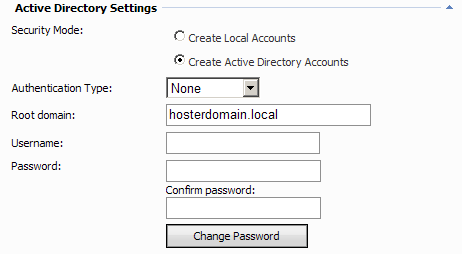
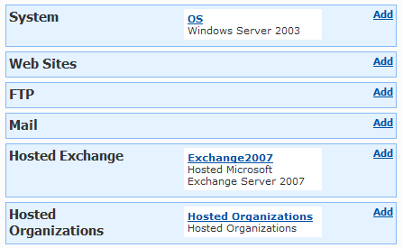
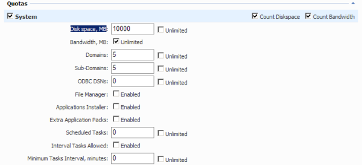

Hosted Exchange Solution Installation Tasks
Translations:
WSP Server account requirements
Requirements for WSP Server application pool identity you choose when deploying WSP Server with WSP Configuration Studio are the same as for WSP Server where Hosted Organizations module will be deployed. They are: membership in "Domain Admins" and "Exchange Organization Administrators" (for Exchange 2007) or "Organization Management" (for Exchange 2010) groups and "IIS_WPG" ("IIS_IUSRS" for Windows Server 2008) and "Administrators" local groups.
Please do not forget to restart WebsitePanel Server pool and web site after you added WSP Server account to appropriate groups and check pool identity and web site anonymous assess. Or you can simple run iisreset on this server if it is not in production.
Setting up "Active Directory Settings"
Requirements for "Active Directory Settings" for all WSP Servers where Hosted Exchange module will be deployed are the same as for WSP Server where Hosted Organizations module will be deployed.

Setting up Exchange Services
- Define main WSP Exchange service.
WSP works with distributed Exchange deployment, i.e. each Exchange 2007/2010 server role (Mailbox, Client Access, Hub Transport) can be deployed on its own separate server. If Exchange 2007 or 2010 roles are installed on different servers you should install WSP Server on each Exchange 2007 or 2010 server (except Edge Transport server).
The main Exchange service in WSP Exchange solution is on server with Mailbox role or some another server with Exchange Administrative tools which manages mailbox server (or Clustered Mailbox Server, in case of Exchange 2007, or Database Availability Group, in case of Exchange 2010) remotely. Both Hub Transport and Client Access services are satellite (slave) to this service in WSP. You can find this server and appropriate components on Visio diagram that should be created on pre-deployment stage.
You should note that this main WSP Exchange service is target for all configuration settings. Settings in WSP Exchange services on Hub Transport and Client Access servers does not make difference, the only condition is that WSP Servers on all Hub Transport and Client Access servers should also run under domain accounts, with appropriate groups membership, and Active Directory settings in WSP on Hub Transport and Client Access servers should be the same as on WSP Server with main WSP Exchange service.
When you will be setting up Virtual Server you will need to add only main WSP Exchange service. You should not add Exchange 2007 or 2010 services for Hub Transport and Client Access servers to WSP Virtual Server, as they will be managed by main WSP Exchange service.
- Add "Exchange 2007" or "Exchange 2010" services to all WSP Servers where Hosted Exchange modules will be deployed.
- Add "System" service to at least one server. If you are going to create mixed Web/Exchange Hosting Plans - add "System" service to WSP Server that will host websites. In case of pure Exchange environment - use any server. Mailbox server is good candidate. Currently, WSP Exchange module uses only few features of "OS" service, however "OS" service is required.
- Ensure that "Hosted Organizations" module is deployed on one of the WSP Servers.

On main WSP Exchange service service specify service settings:
- Storage Group Name ("Hosted Exchange Storage Group" by default). Applicable only to Exchange 2007 module, no such settings in Exchange 2010 module.
- Mailbox Database Name ("Hosted Exchange Database" by default). Please note that when WSP creates Storage Group and Database automatically only on Exchange 2007. WSP Exchange 2010 module does not create Mailbox Database so you should enter name of existing database in this field.
- Keep Deleted Items (14 days by default).
- Keep Deleted Mailboxes (30 days by default).
- Clustered Mailbox Server (empty by default). Applicable only to Exchange 2007 module, no such settings in Exchange 2010 module. Enter Clustered Mailbox Server name here.
- Public Folder Server. You can set separate mailbox server with PF database for OAB creation. In case you manage Mailbox server locally and have no separate PF server - leave this field empty. In case you manage alone mailbox server or Clustered Mailbox Server (Exchange 2007) or Database Availability Group (Exchange 2010) remotely - set some mailbox server name which host PF database there.
- OAB Server. You can set separate mailbox server for OAB generation. In case you manage Exchange Mailbox server locally and have no separate OAB server - leave this field empty. In case you manage alone mailbox server or Clustered Mailbox Server (Exchange 2007) or Database Availability Group (Exchange 2010) remotely - set some mailbox server name there.
- Hub Transport Service ("<Located on the same server>" by default). If Hub Transport Service is installed on the separate server, select an appropriate value from the drop-down list. Add all Hub Transport Services there.
- Client Access Service ("<Located on the same server>" by default). If Client Access Service is installed on the separate server, select an appropriate value from the drop-down list. Add all Client Access Services there.
- Set "Setup Instruction Variables" or skip this step - it can be made later, this is not critical for core functionality.
- Adjust service DNS Zone Records (this is also not critical for core functionality and can be skipped initially). Manually specify IP address for "smtp" A record. It can be IP address of Internet-faced NIC of your Client Access server, or Edge Transport Server, or third party incoming SMTP spam/virus filtering relay. Or it can be Internet-faced NIC of your NAT/firewall which use publishing/port mapping to direct SMTP traffic to appropriate internal SMTP server.
Also this record can be renamed from "smtp" to "mx" or "mail" or anything else, according to your preferences.
Add "autodiscover" or "owa" CNAME record if required. Read more about them in Deploying client connectivity automation

Creating Virtual Server
It is strongly recommended to use Virtual Servers, but not Servers for Hosting plans. This greatly increases scalability and help you avoid many problems during adding services or resources to existing customers
- Select main WSP Exchange service. Do not add Exchange service from Hub Transport and Client Access servers. It is very important to select Exchange service only from main WSP Exchange service.
- Select System (OS) service from any server. Mailbox server is good candidate. If you are going to create mixed Web/Exchange hosting Virtual Server and Hosting plan - use "OS" service only from Web server, not Exchange Mailbox server!
- Select "Hosted Organizations" service from server where you deployed it.
- Optionally select "DNS" service from appropriate server if you use WSP-managed DNS server. This service is not mandatory.
Setting Exchange Mailbox Password Policy
Go to Account home > Policies > Hosted Organization Policy. The policy allows specifying Exchange mailbox password strength. We recommend have minimal password strength at least as defined on the picture below:
Also please do not forget to set Minimum length longer that in Default Domain Policy or equal.
Creating Hosting Plan
Create new Hosting Plan. Notes:
-
For pure Exchange hosting only "Domains", "Sub-Domains" and "Disk space, MB" should be filled mandatory under "System" section.
-
Number of sub-domains should not be less than number of Hosted Organizations because WSP treats every temporary domain (created with every new Exchange organization) as sub-domain.
-
Number of domains should not be less than number of Hosted Organizations multiplied by number of Domains per organization.

-
Number or "Mailboxes per Organization" under "Hosted Exchange" may not be the same as number of "Users per Organization" under "Hosted Organizations", depending on your or your customers business needs.
Now you are ready for creating new Hosting Spaces based on this Hosting Plan and then try to create first Hosted Organization and mailbox!